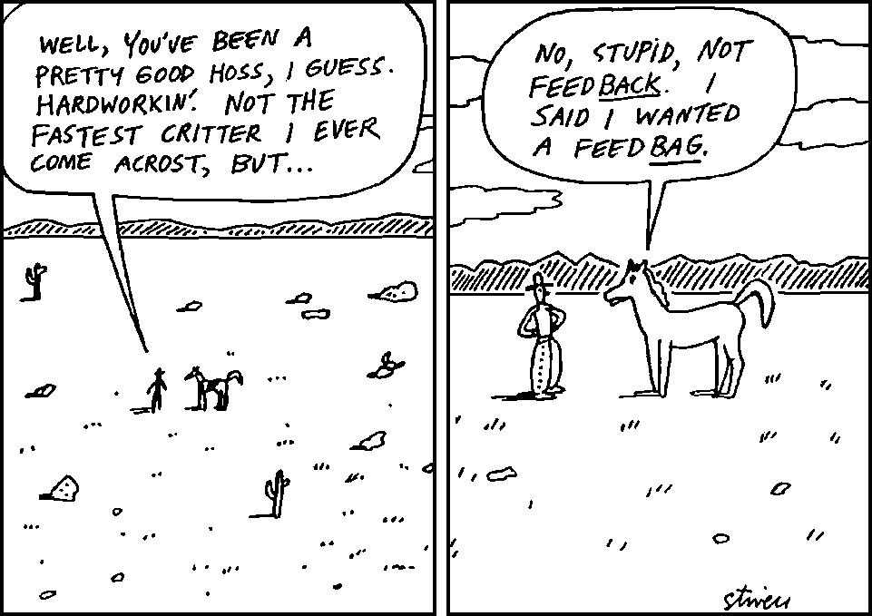

Scrum: Principles and Practices
Agenda
- What is Agile?
- History of Scrum
- Principles
- Practices
{% include presentations/slides/getting-to-know-you.html %}
What Does Agile Mean?
- A philosophy
- An attitude
- A frame of mind
Umbrella Term
- Kanban
- DSDM
- Lean
- XP
- Feature Driven Development (FDD)
- Scrum
History of Scrum?
- Proposed in 1986 by Hirotaka Takeuchi and Ikujiro Nonaka
- “a flexible, holistic product development strategy where a development team works as a unit to reach a common goal”
- A framework that supports the Agile philosophy
Scrum moves on – 1995…
- “A framework within which people can address complex adaptive problems, while productively and creatively delivering products of the highest possible value”
- Call projects “Products” to signify we will deliver a tangible benefit - value
- Empirical approach to getting things done
ScrumGuides.org
- “A framework within which people can address complex adaptive problems, while productively and creatively delivering products of the highest possible value”
- Call projects “Products” to signify we will deliver a tangible benefit - value
- Empirical approach to getting things done
Three Pillars of Scrum
- Transparency
- Inspection
- Adaptation
Roles
- Product Owner
- Development Team
- Scrum Master
Product Owner
This is the most important role
- Represents the Customer
- Holds the Product Vision
- Domain Expert
- Has organisational respect to drive through vision
- Decides the priorities
- Works with the Dev Team
- Provides detailed insight
- Owns the User Stories
- Owns the Product Backlog
Development
Team
This is the most important role
- Do the work
- 5 – 9 members
- Works with the Product Owner
- Estimates the User Stories
- Decide how things are done
- Owns the Sprint Backlog
- Commit to deliver regularly
- Cross functional self-organising professionals
Scrum Master
This is the most important role
- Maintains the Scrum Values
- Works for the Scrum Team
- Servant – Leader
- Facilitates the Scrum Process
- Supports Product Owner
- Resolves impediments
- Protects the Team from interference
You’re not the Boss of me now!
Malcolm in the Middle -
Fox Broadcasting Company
Scrum Team
Glenbrook South
Basketball Team (2011) https://flic.kr/p/aWf8jR
Events
- Discovery Phase
- Sprint Planning
- Sprints
- Daily Standup
- Product Backlog Grooming
- Sprint Review
- Sprint Retrospective
jpellgen
- Tea Ceremony at Kenroku-en - https://flic.kr/p/FfD3W
Discovery Phase
Sprint Zero
- Establish Product Vision – Product Owner
- Produce Definition of “Done”– Development Team
- User Story Mapping– Everyone
- Write User Stories– Everyone (PO owns them)
- Estimate Stories– Development Team
- Product Backlog items– Product Owner
- Not time-boxed
- Has output but not shippable
- Scrum Team members come and go
Sprint Planning
- Review prioritised Product Backlog
- Get missing detail from Product Owner
- Understand Acceptance Criteria
- Define Sprint Backlog
- Commit to deliver in Sprint
- 1 hour per Sprint week
Sarah Ross “A plan implies an architect” - https://flic.kr/p/7BLEJA
Sprints
- Iterations of work
- Time boxed
- Between 1 - 4 weeks
- Always delivers
Daily Standup
- Every day!
- Everybody!
- Scrum Team
- Product Owner
- Development Team
- ScrumMaster
- 15 minutes
- Catch up on how everyone’s doing
- “What I did last time”
- “What I’ll do this time”
- “What’s stopping me”
Backlog Grooming
Maybe we should call that refinement?
- Product Owner
- Add more Stories
- Reorder Backlog
- Add more detail
- Development Team
- Add more Stories
- Ask questions
- Re–guesstimate
- ScrumMaster
- Advises on User Story content
Anjan Chatterjee “grooming” https://flic.kr/p/3dihZ4
Sprint Review
- Development Team “show and tell”
- Audience – Product Owner and Stakeholders
- Demonstrate shippable business value
- Get agreement to deploy to Production
Sprint Retrospective
- “Wot went right?”
- “Wot went wrong?”
- “Wot can we do better?”
Putting it all into practice
Sunglasses
Feedback
Questions,
Feedback,
Comments?

Karl Horton - https://flic.kr/p/3UaCt1
Contact
- agilemix.com/presentations/
- richard@agilemix.com
- @agilemix
- +44 (0)7717 846090